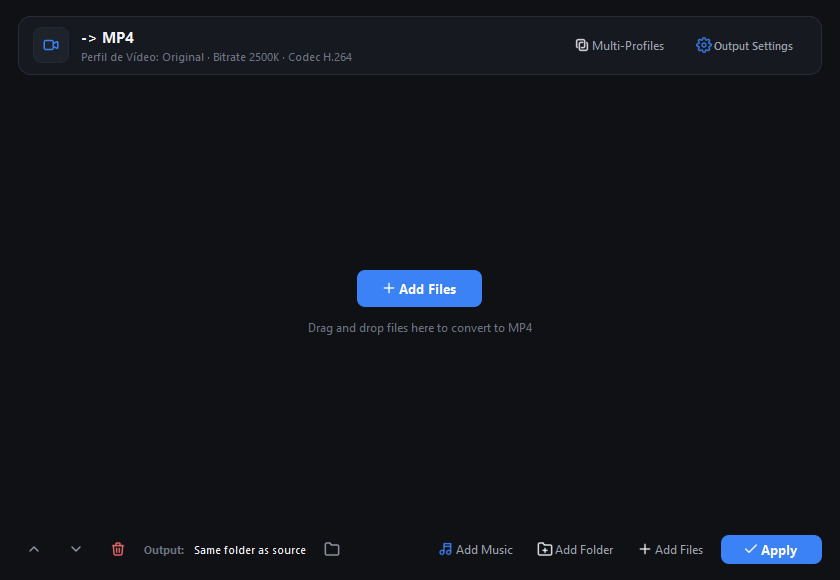
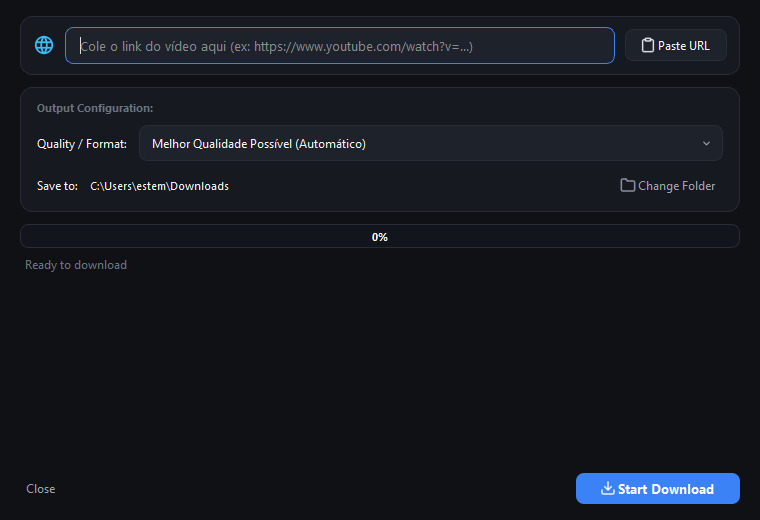
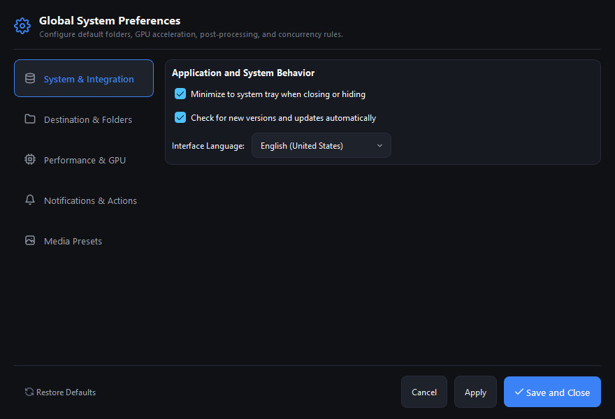
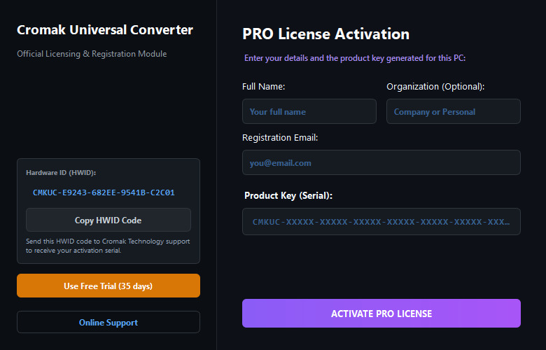

Cromak Universal Converter
Um único aplicativo para converter qualquer formato, editar mídias e automatizar lotes 100% offline.
Chega de subir arquivos confidenciais para sites cheios de anúncios e limites de tamanho. O Cromak Universal Converter reúne FFmpeg 7.1, PyMuPDF, Pillow, Pandas e yt-dlp em uma interface moderna em PyQt6 com fila paralela multi-thread, Editor de Mídia, Gravador de Tela, Renomeador em Lote e integração direta com CromakZip e WEB To APK Compiler.

Conversão Multi-Domínio Sem Enviar Nada para a Nuvem
Ferramentas online limitam o tamanho do arquivo, aplicam marcas d'água e expõem documentos da empresa em servidores externos. O Cromak Universal Converter executa tudo localmente na sua máquina, aproveitando todos os núcleos da CPU para processar filas grandes em segundos.
Alterne entre conversão de Vídeo (MP4, MKV, WebM, AVI, MOV, GIF), Áudio (MP3, WAV, FLAC, AAC, OGG, OPUS), Imagens (PNG, JPG, WebP, AVIF, ICO, PDF), Documentos (PDF, DOCX, TXT, MD, HTML) e Dados (XLSX, CSV, JSON, YAML) em um só fluxo.
| Recursos & Capacidades | Conversores Online / Comuns | Cromak Universal Converter v1.1.2 |
|---|---|---|
| Privacidade & Limite de Tamanho | Upload obrigatório e limite de 100 MB | 100% Local na Máquina · Sem Limite de Tamanho |
| Cobertura de Formatos | Apenas vídeo ou apenas PDF | Vídeo, Áudio, Imagem, Documento e Dados na mesma fila |
| Ferramentas Integradas | Nenhuma ferramenta extra | Editor, Unir Mídias, Gravador de Tela, Downloader, Quadros e Lote |
| Integração Ecossistema Cromak | Isolado | Detecção automática de CromakZip.exe e WebToApkCompiler.exe |
| Licença Vitalícia | Assinaturas mensais recorrentes | US$ 19,90 (20% OFF · Vitalício + Trial B2B 40 dias) |
Os 4 Pilares da Suíte
-
Motores Profissionais Embarcados
FFmpeg 7.1 para vídeo e áudio, PyMuPDF/Fitz para PDFs ultrarrápidos, Pillow para WebP/AVIF/ICO e Pandas + OpenPyXL para planilhas e JSON/YAML.
-
Fila Inteligente Multi-Thread
Arraste pastas inteiras, aplique presets de qualidade/DPI/bitrate, acompanhe o progresso em tempo real e configure ações automáticas ao concluir.
-
Utilitários de Produção Integrados
Mini Player, Editor de Mídia, Unir Mídias, Gravador de Tela (F6), Baixar Vídeo (yt-dlp), Renomear em Lote e Exportador de Quadros sem instalar nada extra.
-
Conexão Nativa com Cromak Technology
Abre diretamente o CromakZip.exe e o WebToApkCompiler.exe instalados no seu Windows diretamente pela barra de utilitários.
Explore o Cromak Universal Converter por Dentro
Capturas reais da versão 1.1.2 mostrando a interface principal, presets de conversão, downloader, preferências e licenciamento.

Interface Principal & Utilitários
Barra lateral organizada por categorias (Vídeo, Áudio, Imagem, Documento, Dados e Utilitários Cromak) com zona de arrastar-e-soltar, fila em tempo real e controle de threads.

Presets & Parâmetros de Conversão
Configure formato de destino, qualidade, bitrate de vídeo/áudio, resolução e pasta de saída antes de enviar múltiplos arquivos para a fila paralela.

Downloader Universal (yt-dlp)
Baixe vídeos e áudios diretamente da web a partir de links com seleção de formato, qualidade e salvamento direto na pasta configurada sem depender de sites externos.

Preferências, Threads & Idiomas
Ajuste quantidade de núcleos de processamento, pasta padrão de saída, diretórios de gravação/capturas, verificação de atualizações e troca instantânea de idioma.

Licenciamento Oficial HWID & Trial B2B
Avaliação gratuita de 40 dias sem bloqueio ao expirar (modelo B2B) e ativação vitalícia por assinatura SHA-512 vinculada ao Código de Máquina (CMKUC-).

Transparência de Motores & Documentação
Visualização clara de todos os motores embarcados (FFmpeg, PyQt6, PyMuPDF, Pillow, Pandas, yt-dlp) e acesso offline direto a EULA, Privacidade e Manual.
Licenciamento Simples e B2B
Avalie por 40 dias com todos os recursos sem bloqueio ou garanta sua licença vitalícia com 20% de desconto.
Avaliação Gratuita (40 Dias)
- Todas as funções liberadas por 40 dias
- Conversão offline em lote (FFmpeg, PyMuPDF, Pandas)
- Editor de Mídia, Gravador de Tela e Downloader
- Integração automática com CromakZip e WEB To APK
- Modo B2B não-bloqueante após o período
- Exibe lembrete de licença ao iniciar após 40 dias
- Uso comercial contínuo requer licença PRO
Licença Vitalícia PRO
- Licença Vitalícia Perpétua (Pague Uma Vez)
- Zero Telas ou Avisos de Avaliação
- Uso Comercial, Corporativo e Profissional Liberado
- Todos os motores de conversão sem limites
- Utilitários completos (Gravador, Editor, Downloader, Lote)
- Atualizações contínuas da série 1.x
- Suporte técnico prioritário via Código HWID
Envie seu Código HWID (CMKUC-...) ao suporte após a compra
Disponível em 3 Idiomas Nativos
Interface completa traduzida com troca instantânea nas preferências do aplicativo.
Perguntas Frequentes (FAQ)
Os meus arquivos são enviados para algum servidor durante a conversão?
Não. Todo o processamento de vídeo, áudio, imagem, PDF e planilhas acontece 100% localmente no seu computador, garantindo sigilo total para documentos corporativos e mídias privadas.
O que acontece após os 40 dias de avaliação?
Seguindo nosso modelo B2B, o software nunca bloqueia seu trabalho: ele exibe um lembrete de licença ao iniciar e permite continuar usando normalmente. Para remover os avisos e liberar uso comercial contínuo, basta ativar a licença PRO.
Como funciona a integração com CromakZip e WEB To APK Compiler?
Na aba de utilitários do Converter, os atalhos detectam automaticamente o CromakZip.exe e o WebToApkCompiler.exe instalados no Windows para abri-los com 1 clique.